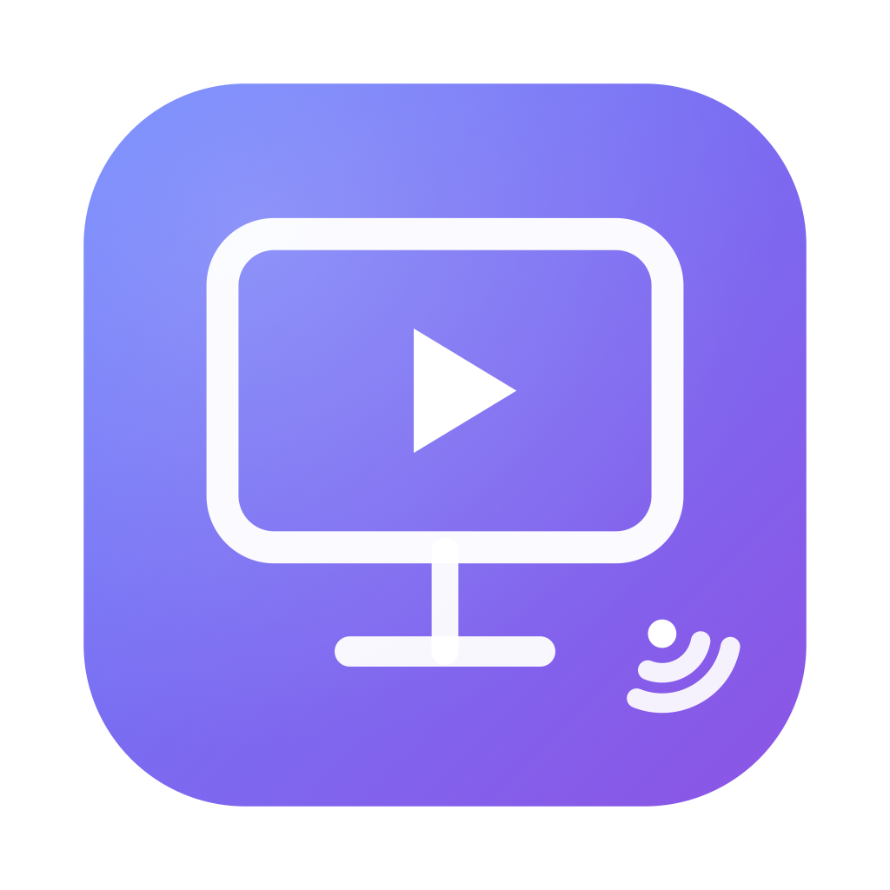

iTellyTV 继承了 iTelly-macOS 的设计、错误恢复、协议支持，但用 Media3 / ExoPlayer 替代了 libVLC 内核——
远程 m3u / m3u8 订阅、本地文件导入、单条流直连。CCTV 在前、湖系优先的自然排序。
SurfaceView 长期存活、永不替换。切频道只换 MediaItem，0 ms 重建延迟。
1s/2s/4s 退避重连，最多 3 次。15s 无进度看门狗。连续失败自动跳下一频道；全部失败显示"服务器挂了"。
↑/↓ 切台，← 召唤频道列表抽屉，OK 选台，Back 二级返回，数字键直接跳 N 号频道。
长按 OK 在某频道：加入收藏 / 取消收藏。★ 标记左侧出现。
Activity 重建不丢数据。Flow 自动响应数据库变化。70 个 unit test 覆盖核心逻辑。
到 Releases 下载最新的 iTellyTV-vX.Y.Z-debug.apk，用 adb 装到 Android TV：
adb install -r iTellyTV-v1.0.0-debug.apk
adb shell am start -n com.example.itellytv/.ui.MainActivity首次启动会提示"是否允许安装未知应用"——去 设置 → 安全 → 允许此来源。
iTellyTV 默认加载您 home 网络上的 IPTV 订阅：
http://10.0.0.51:1905/interface.m3u?profile=keren想换订阅？长按主页右上角的 ⟳ Reload 按钮 → 输入新的 m3u URL → Load。
iTelly-macOS README 列了"5 个值得记录的实现要点"——iTellyTV 全部继承：
DefaultHttpDataSource.Factory 在 ExoPlayer.Builder().build() 之前一次性建好（含 #EXTVLCOPT headers + 超时 + User-Agent）。volume 0.0f-1.0f，避免 macOS 的"一处用 0-1、另一处用 0-100"陷阱。VLCCAOpenGLLayer 教训）。已验证：Android TV 13 (API 33) 设计目标。
支持：Android TV 14 / 15 / 16 (API 34-36)。Android 15+ 的 edge-to-edge 已在 EdgeToEdgeInsets 处理。
测试覆盖 70 个 unit test：M3U 解析、自然排序、播放器调参、退避算法、抽屉选中状态、错误分类。
© 2025 zdx8 · Licensed under Apache 2.0
github.com/zdx8/iTellyTV